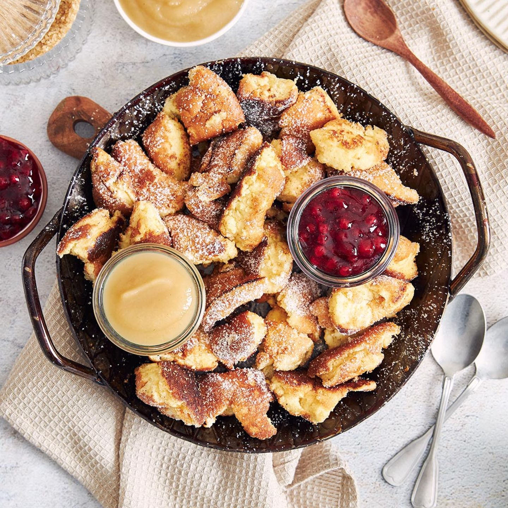

Kaiserschmarrn

Frisch zubereiteter Kaiserschmarrn
Kaiserschmarrn wird auch Kaiserschmarren genannt und ist eine verfeinerte Form des Schmarrns,
also eine Zubereitung aus Palatschinkenteig und zählt zu den bekanntesten Süßspeisen und Desserts der österreichischen Küche.
Benötigte Zutaten
- 30g Rosinen
- 2 EL Rum
- 4 Eier, getrennt
- 30g Zucker
- 1 Pck. Vanillezucker
- 375 ml Milch
- 125g Mehl
- 40g Butter
Puderzucker
Schritte für die Zubereitung
- Rosinen 30 Minuten mit Rum in einer Schüssel einweichen.
- Eigelb, Zucker, 1 Prise Salz und Vanillezucker in einer Schüssel mit dem Schneebesen schaumig rühren, bis die Masse hellgelb und cremig wird.
- Milch und nach und nach Mehl unterrühren, dann die Rosinen zugeben. Eiweiß sehr steif schlagen, vorsichtig unter den Teig heben.
- In einer Pfanne Butter erhitzen, Teig einfüllen und bei kleiner Hitze braten, bis die Unterseite leicht gebräunt ist und immer wieder wenden, bis alles leicht angebraten ist.
- Dabei gleich zerreißen. Auf Tellern anrichten und mit Puderzucker bestreuen.
- Als Beilage Zwetschgenröster oder Kompott reichen.